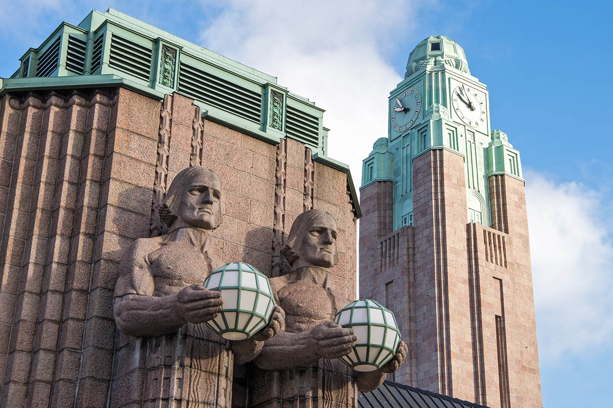

Yleistä
Helsingin päärautatieasema on Suomen vilkkain rautatieasema ja merkittävä maamerkki Helsingin keskustassa. Asema valmistui vuonna 1919 ja sen on suunnitellut arkkitehti Eliel Saarinen.
Arkkitehtuuri
Rautatieasema tunnetaan erityisesti graniittijulkisivustaan ja Lyhdynkantajat-patsaista, jotka vartioivat pääsisäänkäyntiä. Rakennus on yksi Helsingin tunnetuimmista nähtävyyksistä.
Juna-aikataulut
Tarkista ajankohtaiset junien aikataulut ja reitit VR:n verkkosivuilta: Helsingin Rautatieaseman juna-aikataulut
← Palaa kartalle